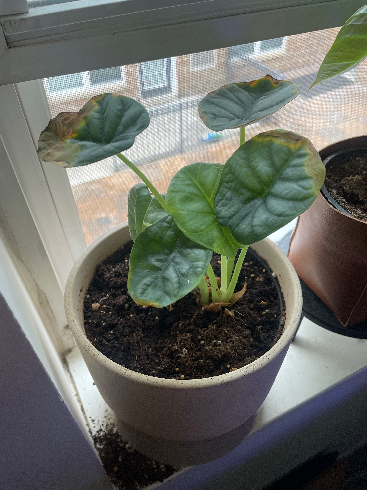
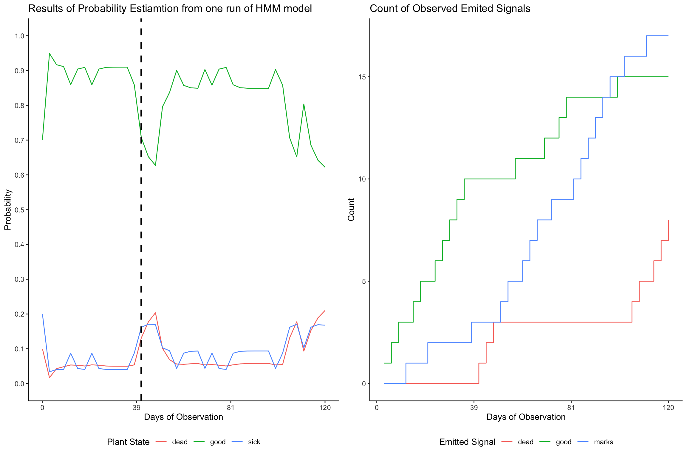
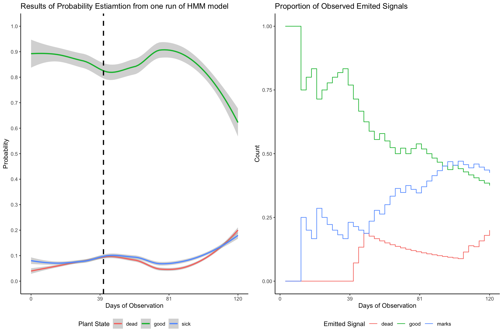

Plants
Introduction and Motivation
In Fall 2023 I took a class covering basics of probability models at the University of Minnesota School of Public Health. For about a month the focus of the class was centered at discrete time Markov Chain and Hidden Markov Chains. Predominantly, my biostatistics curriculum covered regression and frequentists methods of data analysis. It was refreshing to work with models that focus on drastically different concepts. While most examples of Markov Chain focus on weather states (rainy days followed by sunny days, etc…), I immediately through of other ways to apply these methods: passing sequences in soccer and health of my home plants. In this short article I will cover how one might apply HMMs to understand the health of a house plant.
Background
As of 2/3/2023, I have 74 house plants, all varying in size, type, required conditions, and other factors. Among them, succulents and alocasia plants are the hardest to take care of. They are not dying, but they aren’t thriving as much as other plants. Figure 1 shows one of our alocasia, this one is alocasia sliver dragon, I believe.
Note that it has some yellow crispy parts on the leaves. Sometimes, the leaves have black circles and marks show up towards the center of the plant. In any case, anything that shows up on a clean nice leaf is referred to as a mark by me in further sections. Occasionally, a leaf would die completely and dry out. This made us worry a lot about the condition of out plant, but it seems that this happen periodically.
Every time one of the leafs dies or starts to crisp up, we worry that the plant might be sick due to under or over watering, of it must be dying. Given my limited knowledge of house plants, the only way for me to figure our what is going on with the plant is to either: (a) stick a moist meter into the soil and he if the plant is over or under watered, or (b) take the plant out of the planter and investigate the condition of the roots. This procedure is quite invasive, puts the plant at risk of ripping the roots apart, and is honestly quite messy. I do not plan to stop having these plants at home, maybe there is a data driven way to look at my plants’ health.
Statistical Methods
Conditional Probabilities
In Markov Chains, probability of the next state depends only on the current state, i.e. \(P(X_{i+1} = j | X_{i} = k)\). But, in the Hidden Markov Chain (HMM), we only get to observe a signal \(S_{i+1} = s\). Based on historical data and hindsight knowledge, one can estimate \(P(X_{i+1} = j | X_{i} = k)\), and \(P(S_{i} = s | X_{i} = j)\). These two conditional probabilities as well as the three equations form the basics of HMM algorithm.
Forward Probability (Forward Algorithm)
The forward probability, denoted as \(\alpha_t(i)\), represents the probability of being in state \(i\) at time \(t\) given the observed sequence up to time \(t\). It is computed using the forward algorithm:
\[\begin{align} \alpha_t(i) = P(X_t = i | Y_{1:t}) = P(Y_t | X_t = i) \sum_{j} P(X_t = i | X_{t-1} = j) \alpha_{t-1}(j) \end{align}\]
Backward Probability (Backward Algorithm)
The backward probability, denoted as \(\beta_t(i)\), represents the probability of observing the sequence from time \(t+1\) to the end, given that the system is in state \(i\) at time \(t\). It is computed using the backward algorithm:
\[\begin{align} \beta_t(i) = P(Y_{t+1:T} | X_t = i) = \sum_{j} P(Y_{t+1} | X_{t+1} = j) P(X_{t+1} = j | X_t = i) \beta_{t+1}(j) \end{align}\]
Conditional Probability (Decoding)
The conditional probability, denoted as \(\gamma_t(i)\), represents the probability of being in state \(i\) at time \(t\) given the entire observed sequence. It is used for decoding:
\[\begin{align} \gamma_t(i) = P(X_t = i | Y_{1:T}) = \frac{\alpha_t(i) \beta_t(i)}{P(Y_{1:T})} \end{align}\]
The conditional probability can be calculated as:
\[\begin{align} \gamma_t(i) = \frac{\alpha_t(i) \beta_t(i)}{P(Y_{1:T})} \end{align}\]
Basic Interpretation
We need to initialize the algorithm. Thus, we always assume some probability distribution of states at the first or initial state, where the chain begins. Then, using a set of backward and forward steps, we calculate the probability of transitioning to a given state from the most recent possible step in the chain. Then we apply conditional probabilities of observing emitted signal to get the intermediate state of transitions. And then we repeat the cycle. Conditional probability, or decoding step, then brings together all pieces of the calculation, which gives us the desired probability of being in state \(i\) after observing a sequence of emitted signals.
In a sense, instead of evaluating transitions directly from state to state as time goes on, look at the ‘transition’ from state \(i\) to signal \(s\) and then into state \(j\). This intermediate step gives un the best guess at what the true state at time \(t\) could have been.
Inputs and Data Elements
Transition Matrix
In order to conduct our analysis, we need two matrices. First, a matrix of transition probabilities. In practice, one might look at historical records and calculate these conditional probabilities. In the context of plants’ analysis, a detail oriented person can take a record of plants’ health, or condition, and give these time series data to a statistician for analysis. An example of the matrix that I used in my analysis is in Figure 2.
For example, \(P(X_{i+1} = j| X_{i} = k\)) can be \(P(X_{i+1} = Good \ Health | X_{i} = Good \ Health) = 0.6\)
| Good | Sick | Dead | |
|---|---|---|---|
| Good | 0.6 | 0.2 | 0.2 |
| Sick | 0.3 | 0.4 | 0.3 |
| Dead | 0.0 | 0.0 | 1.0 |
Second, we need a matrix with probabilities of observing a signal given a particular state. Such a matrix is given in Figure 3.
For example, \(P(S_{i} = j| X_{i} = k\)) can be \(P(X_{i+1} = Dead \ Leaf | X_{i} = Good \ Health) = 0.6\)
| Good | Sick | Dead | |
|---|---|---|---|
| Nothing | 0.8 | 0.1 | 0.1 |
| Marks on Leafs | 0.7 | 0.2 | 0.1 |
| Dead Leaf | 0.5 | 0.3 | 0.2 |
To recap, the hidden states are the true health condition of a plant, which are \(Good \ Health\), \('Sick'\) due to some factors such as over or under watering, and \('Dead'\) or \('Dying'\) plant.
Observed states are some markers that can be indicative of plant’s health. These markers are \(Nothing\), indicating no new problems, new \(Marks \ on \ Leafs\) which indicate some problems, and new \(Dead \ leaves\) indicating potentially some serious problems.
Results
Application of Algorithms
To initiate the analysis, we also pick marginal probabilities for each state before the first transition. \(P(Good \ Health) = 0.7\), \(P(Sickness) = 0.2\), and \(P(Dead \ or \ Dying) = 0.1\)
Figure 4 shows results of our analysis. Left plot shows estimated probability using HMM forward and backward equations, while a plot of the right shows accumulation of emitted signals over time. Instead of giving you a sequence with 30 emitted signals, a plot shows you that for the most part, we observed mostly ‘good’ emitted states, no new bad marks or dead leafs. Periodically, we saw some marks, and after about 10 observational periods (30-something days) we started to see some dead leaves. Black vertical line shows a point in time when we saw the very first dead leaf. Given that we did not see more dead leaves, the probabilities quickly reverted to the more or less stable rates.

Confidence Bounds
Figure 5 here

Discussion, Conclusion, Futher Work